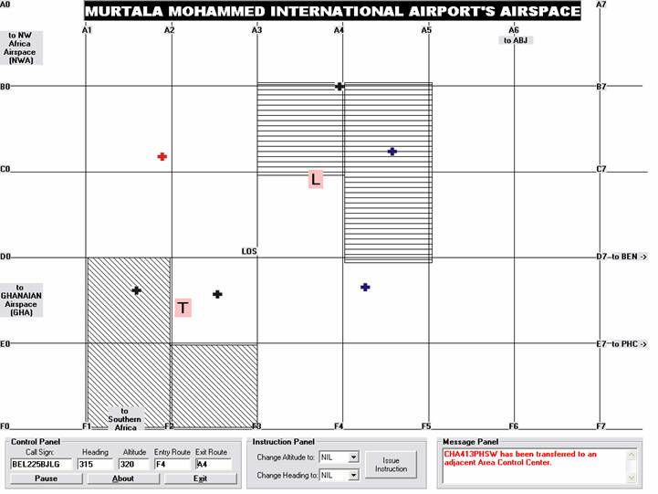

Air Traffic Control Simulation Application
A Final Year BSc. Project
12 July to 19 July 2006.
A Legacy Application developed in MS Visual Basic 6.0
Developed in Microsoft Visual Basic 6.0, the application puts the user into the role of an Air Traffic Controller at a major airport, coordinating aircraft arrivals and departures, as well as “transiting” air traffic.
The application effectively turns the computer into a radar terminal; the kind which is usually found in an airport's control tower. The user will be in charge of directing any aeroplanes in the area to their desired destination.
One (Major) Requirement. . .
Developed in 2006 in Microsoft’s legacy Visual Basic 6.0, it served as a final year BSc. Project and has not been revisited since. MS VB6.0 is therefore required to load and run the program, unfortunately!
I have nonetheless chosen to put it up online in case any legacy-programming-language-buff may be interested in working on it to “modernize”.
No dependencies needed per-se… Just download and open the .VBP file in your IDE, then press F5 to run.
How to use the simulation
The application presents the user with a choice of difficulty level, (easy, medium or hard), which determines how many aircraft the simulation will start with.
Understanding the display
Within the display, the Lagos Airport is represented by a grey rectangle labelled “LOS”. The entry point to approach the runway for landing is represented by a pink rectangle labelled “L”, and the point from which aircraft that take off are “picked up” or displayed on Area Control radar is labelled “T” (see screenshot below)
Aircraft are represented by small dots whose movement across the screen simulate the motion and direction of the aircraft they represent across the controlled airspace.
Using the application
Aircraft are completely dependent on the controller’s instructions. By clicking on the visual representation of an aircraft, its callsign, altitude, heading, entry and scheduled exit points can be viewed in the “control panel”. Also, when an aircraft is “selected” by clicking on its visual representation, instructions can be issued by specifying the new altitude to climb to (or descend to), and / or the new heading to face. These can be done with the combo boxes in the “Instruction Panel”. (see screenshot below)
A set of standard rules adhered to by Air Traffic Controllers at MMIA have been coded into the program: in order for an aircraft to approach the runway properly, it must be flying at an altitude lower than 300 nmi as it “enters” into the “L” beacon, otherwise, it has to turn around and negotiate another approach towards the “L” beacon. Also, aircraft flying westward should maintain an even-numbered altitude (such as 320, 340, etc) and all eastbound aircraft should fly on odd-numbered altitudes (such as 310, 330, etc). This is merely a policy, but it helps minimize the possibility of occurrence of a collision.
When an aircraft flies out of the controlled area, the user is notified via a message displayed in the “Message Panel”.
Limitations of the application
Much as I would have loved to include more functionality in this application, my choice of programming language (and my level of expertise) made a number of intended features simply impossible to accomplish.
One of these is highlighting of aircraft that are flying on conflicting paths, and may soon be involved in a collision. This is usually part and parcel of every ATC Simulator I have seen, but I was not able to change the aircraft’s image control’s image property from code (to attract the user’s attention).
Also, aircraft do not “enter” into the airspace dynamically (at varying time intervals); rather, they all “enter” at the beginning of the simulation, and once they have all been routed to their destinations, the airspace remains empty.
There is no monitoring of performance of the controller. This should be done based on criteria such as How many aircraft are routed to the correct destination, How many crashes occur within each session, How many crashes are avoided, etc.
Aircraft can only fly along headings in multiples of 45 degrees. This was done to reduce the amount of code to be written, actually (LOL)!
The visual representation of aircraft should be richer and more informative: trailing dots could be attached to signify previous position and current direction, coloration could be used to signify altitude, etc.
Comments and Conclusion
I concentrated more on the design phase of this software development project, based on the premise that “excellent design yields a high quality software product that achieves the three core internal software qualities of maintainability, reusability, and (easy) understandability, thereby facilitating upgrade and adaptability and extending its life span.” – C.S. French

Fig 1: Screenshot of the Controller's Screen at System Startup time.
© Code Demon Inc. 2006